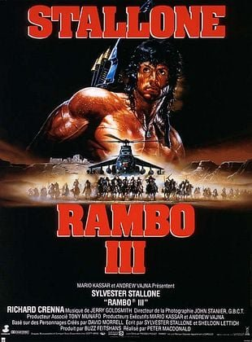
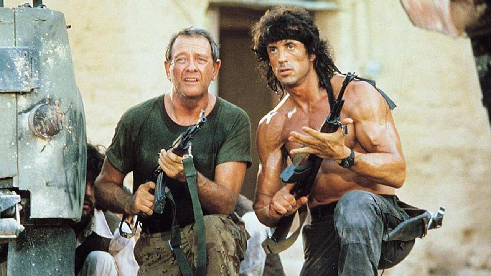

Celui-là, ce n'est pas une cassette achetée. C'est une cassette enregistrée.
Mes parents l'avaient enregistré un soir à la télévision. Je devais avoir sept ou huit ans.
C'était l'époque de Télé K7, ce magazine télé qui glissait dans ses pages des jaquettes à découper pour habiller les films qu'on enregistrait. La cassette avait donc sa jaquette, soigneusement récupérée dans le magazine, comme un vrai film du commerce. Sur la tranche, un titre qui en imposait : Rambo III.
C'était ma première rencontre avec Sylvester Stallone.
Et comme pour Die Hard 2, je suis entré dans la saga par la porte du fond. Je ne connaissais ni le premier ni le deuxième. Pour moi, Rambo, c'était ça : un homme seul, un désert immense, et une armée entière face à lui.
Ce soir, on ressort la cassette enregistrée.

Rambo III — affiche française, 1988
Rambo III.
1988. Réalisé par Peter MacDonald. Avec Sylvester Stallone, Richard Crenna et Marc de Jonge.
C'est le troisième chapitre d'une saga qui a déjà changé de nature en cours de route. Rambo, en 1982, était un drame presque intime : un vétéran brisé, seul contre une petite ville qui le rejette. Rambo II, trois ans plus tard, en faisait une armée à lui tout seul et un symbole planétaire.
Rambo III doit aller encore plus loin.
Cette fois, John Rambo a trouvé la paix dans un monastère en Thaïlande. Mais quand le colonel Trautman, le seul homme qu'il considère comme un père, est capturé par l'armée soviétique en Afghanistan, il reprend les armes une dernière fois.
Musique de Jerry Goldsmith, produit par Carolco, et un budget d'environ soixante millions de dollars : pour son époque, le film figure parmi les plus chers jamais tournés.
C'est une suite qui assume tout : le spectacle, la démesure, l'icône. La question de cet épisode spécial se pose donc plus que jamais : jusqu'où une suite peut-elle transformer son héros sans le trahir ?
1985. Rambo II : La Mission est un triomphe planétaire. Environ trois cents millions de dollars de recettes dans le monde. John Rambo n'est plus un personnage, c'est une icône, avec un bandeau rouge, un arc et un torse nu reconnaissables partout sur la planète.
Pour Carolco, le studio indépendant de Mario Kassar et Andrew Vajna, une troisième aventure est une évidence. Le budget grimpe à environ soixante millions de dollars. Pour l'époque, c'est l'un des films les plus chers jamais produits.
Stallone coécrit le scénario avec Sheldon Lettich, un ancien Marine qu'on retrouvera plus tard derrière la caméra de Double Impact et d'Only the Strong. Leur idée est d'envoyer Rambo au cœur du conflit le plus brûlant du moment : la guerre soviétique en Afghanistan, commencée en 1979.
La réalisation est d'abord confiée à Russell Mulcahy, le futur réalisateur de The Shadow. Mais après quelques semaines de tournage en Israël, les désaccords artistiques avec Stallone sont trop profonds, et Mulcahy est remplacé. C'est Peter MacDonald qui prend la suite. Il était réalisateur de seconde équipe sur Rambo II, et c'est son premier long métrage. Il hérite d'une production gigantesque déjà lancée.
Le tournage se partage entre les déserts d'Israël, qui doublent les montagnes afghanes, la Thaïlande et l'Arizona. Chars, hélicoptères, figurants par centaines : tout est réel, tout est démesuré.
Richard Crenna revient dans le rôle du colonel Trautman, et son personnage prend cette fois une place centrale. Jerry Goldsmith signe sa troisième partition pour la saga.
Et puis il y a l'Histoire, qui s'invite là où personne ne l'attendait. Le film sort aux États-Unis le 25 mai 1988. Dix jours plus tôt, l'Union soviétique a commencé à retirer ses troupes d'Afghanistan. Rambo part en guerre au moment exact où la guerre s'arrête.

Le colonel Trautman (Richard Crenna) et John Rambo (Sylvester Stallone)
Bangkok.
John Rambo a déposé les armes. Il vit dans un monastère bouddhiste, aide les moines à reconstruire leur temple et gagne un peu d'argent dans des combats de bâton clandestins, qu'il reverse aussitôt à la communauté. Pour la première fois, il semble avoir trouvé une forme de paix.
Un jour, le colonel Trautman vient le trouver. Il prépare une mission en Afghanistan pour livrer des armes aux combattants qui résistent à l'armée soviétique, et il a besoin de lui.
Rambo refuse. Sa guerre est finie.
Trautman part donc sans lui. Il est capturé par l'armée soviétique et emmené dans une forteresse perdue au milieu des montagnes, aux mains d'un colonel impitoyable, Zaysen.
Cette fois, Rambo n'hésite plus. Trautman est le seul homme qui l'ait jamais compris, et il part le chercher.
Il franchit la frontière, découvre un pays dévasté par la guerre et trouve refuge auprès d'un village de résistants afghans, qui se méfient d'abord de cet étranger venu seul. Face à lui se dressent une forteresse imprenable, une armée entière, des hélicoptères, des chars.
Un homme contre une armée, dans un désert sans fin, avec une question en suspens : peut-on vraiment quitter la guerre quand la guerre vient vous chercher ?
Rambo III est souvent présenté comme l'épisode de trop, celui où la saga aurait basculé dans la surenchère. C'est oublier ce qu'il garde, sous l'avalanche d'explosions.
Car la vraie question de cette saison spéciale se pose ici plus que jamais : qu'est-ce qu'une suite a le droit de changer ?
Rambo III change presque tout. L'échelle, d'abord : on était dans une petite ville de montagne avec le premier film, dans une jungle avec le deuxième, et on se retrouve face à une armée entière dans un désert sans fin. Le ton, ensuite : le drame psychologique de 1982 a laissé la place au grand spectacle d'aventure, assumé jusqu'au bout. Et le héros lui-même, devenu presque invulnérable, plus proche du mythe que de l'homme.
Mais il garde l'essentiel : le lien entre Rambo et Trautman.
C'est le cœur du film, et c'est ce qui le relie directement au premier. Trautman est le seul qui ait jamais compris Rambo, celui qui l'a formé, celui qui venait le chercher au bout de chaque film. Cette fois, les rôles s'inversent : c'est Rambo qui part chercher Trautman. Pour la première fois, il ne se bat pas contre quelqu'un, il se bat pour quelqu'un. Et Richard Crenna, plus présent que jamais, donne à ce duo une chaleur inattendue.
Le film garde aussi la solitude du personnage. Rambo commence dans un monastère, en quête de paix, et c'est la guerre qui vient le chercher. On est au fond très proche du vétéran de 1982, qui voulait seulement qu'on le laisse tranquille.
Côté spectacle, le film tient sa promesse. Les séquences sont immenses, tournées pour de vrai, avec des chars, des hélicoptères, des cascades physiques et des explosions sans le moindre effet numérique. La partie de bouzkachi, ce jeu équestre afghan, est un moment de cinéma à part, presque documentaire. Et la partition de Jerry Goldsmith donne à l'ensemble un souffle de western.
Tout n'est pas parfait. Les méchants sont taillés d'un seul bloc, certains dialogues ont mal vieilli, et le contexte géopolitique fige le film dans son époque.
Mais Rambo III ne trahit pas son héros. Il l'emmène simplement plus loin qu'on ne l'aurait imaginé.

Un homme contre une armée — Rambo III, 1988
Rambo III n'a pas été oublié. Tout le monde connaît son titre. Mais dans la saga, il occupe la case la plus ingrate : celle du volet dont on parle le moins.
Le box-office a donné le premier signal. Environ cinquante-trois millions de dollars de recettes aux États-Unis, contre près de cent cinquante pour Rambo II. À l'international, le film reste rentable, mais en Amérique la chute est brutale, et Hollywood ne retient que ça.
Le calendrier n'a rien arrangé. Au printemps 1988, Crocodile Dundee II sort la même semaine et lui passe devant. Quelques semaines plus tard, Piège de cristal redéfinit le héros d'action : plus d'homme invincible, place à un flic ordinaire qui saigne et qui doute. Du jour au lendemain, le modèle Rambo paraît appartenir au passé.
Puis l'Histoire lui a coupé l'herbe sous le pied. Le film sort au moment même où les Soviétiques commencent à quitter l'Afghanistan. Un an plus tard, le mur de Berlin tombe. Le grand ennemi de la saga disparaît, et Rambo III se retrouve figé dans un monde qui n'existe plus.
La critique, elle, l'a jugé sans indulgence. Trop long, trop violent, trop sérieux. Plusieurs nominations aux Razzie Awards ont achevé de lui coller l'étiquette de suite de trop.
Et avec le temps, les classements l'ont définitivement placé derrière. Rambo, le premier, est le drame respecté. Rambo II est l'icône des années 80. Rambo III, lui, se retrouve coincé entre les deux, trop spectaculaire pour être pris au sérieux, pas assez culte pour être célébré.
Pourtant, pour ceux qui l'ont découvert en premier, sur une cassette enregistrée un soir à la télévision, il n'y avait aucun classement. Il n'y avait que Rambo.
Un film déclassé par son époque, bien plus que par ce qu'il montre à l'écran.
Parce que la hiérarchie des suites fausse le regard, et Rambo III en est la preuve.
Comparé au premier, il paraît excessif. Comparé au deuxième, il paraît répétitif. Mais regardé seul, comme je l'ai découvert à sept ou huit ans, c'est un grand film d'aventure, ample, généreux, porté par une star au sommet de sa puissance.
Parce que c'est le volet le plus humain de la trilogie, contrairement à sa réputation. Rambo ne part pas en guerre pour une cause ou pour une vengeance. Il y va pour sauver le seul homme qui compte pour lui. Le lien entre Rambo et Trautman donne au film un cœur que ses explosions ont longtemps caché.
Parce que tout ce qu'on voit à l'écran a été fait pour de vrai : les chars, les hélicoptères, les cascades, les déserts à perte de vue. C'est un cinéma de la démesure physique, qu'aucun studio ne tournerait plus de cette façon aujourd'hui.
Parce que Jerry Goldsmith y signe l'une de ses partitions les plus épiques, et que la séquence du bouzkachi reste un moment unique dans le cinéma d'action des années 80.
Et parce que le film répond à la question de cette saison spéciale. Une suite a le droit de tout changer, l'échelle, le décor, le ton, tant qu'elle garde l'âme de son héros. Rambo III l'emmène au bout du monde, face à une armée entière. Mais au fond, c'est toujours le même homme, qui cherche la paix et ne la trouve jamais.
Rambo III n'est pas Rambo. Il ne cherche pas à l'être.
C'est une suite qui a pris tous les risques : changer d'échelle, changer de ton, transformer un vétéran brisé en légende. On lui a reproché d'être allé trop loin. Mais sous le bruit et la fureur, elle a gardé l'essentiel : un homme seul, fidèle au seul ami qu'il ait jamais eu.
Tout le monde vous dira que c'est le moins bon des trois.
Peut-être.
Mais moi, je l'ai découvert dans l'autre sens. Sur une cassette enregistrée un soir à la télévision par mes parents, rangée dans une jaquette découpée dans Télé K7. Je ne savais pas qu'il y avait eu deux films avant. Je ne savais rien des critiques, des chiffres ou des Razzie.
Je savais seulement que c'était Stallone, que c'était Rambo, et que je n'avais jamais rien vu de pareil.
La cassette est dans le lecteur. On rembobine.
Titre original
Rambo III
Pays
États-Unis
Genre
Action / Aventure
Durée
102 min
Producteur
Carolco Pictures
Avec aussi
Marc de Jonge · Kurtwood Smith · Sasson Gabai
Scénario
Sylvester Stallone · Sheldon Lettich
Fil conducteur
Saison Spéciale — La suite qui va trop loin
SOMEDAY — SPÉCIAL EP. 02